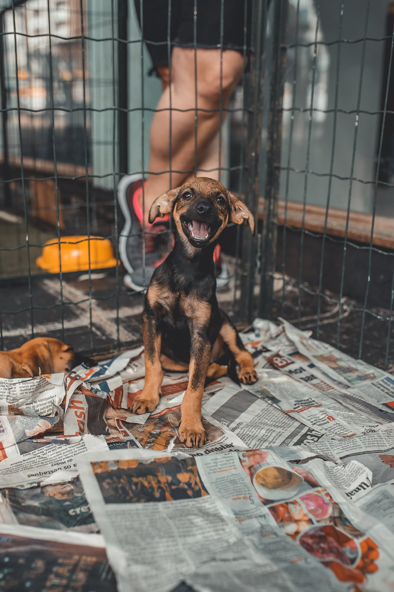
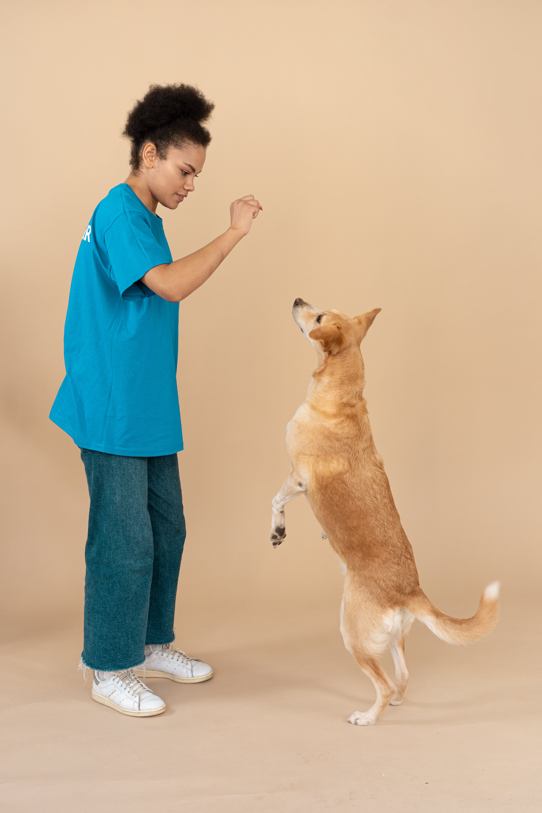

Instagram:Saving_Canine23
Twitter:Saving_Canine
TikTok:Saving_Canine23

KiKi is a 1 year old female cat that was found roaming the streets of Decatur. She is a very loving cat and enjoys to spend her free time sitting in laps. She is already house broken and is comforatbale around other cats and dogs. KiKi is not used to being around children so keep that in mind when deciding if KiKi's FUREVER home is with you!
Darwin is a 5 year old male cat. He has lived a pretty tough life on the streets of Decatur and he is ready to find his FUREVER home! He is a little shy at first but once you win his heart he is the biggest cuddle bug. Darwin cannot be in a home with any children or any other pets.
Cheese Ball is a 6 month old female dog. Her breed is unknown, but she is the sweetest! She loves to play fetch and give lots of kisses and cuddles. I'm sure you can guess what her favorite treats are... CHEESE BALLS! She is comfortable being around all other types of animals, as long as there are introduction. Will you be her perfect match for her FUREVER home?
Max is a 2 year old male dog, breed unknown. He is very well trained and loves for his mind to be worked! He is a very smart dog so he will always keep you on your toes. When it's time to wind down, Max is always there for a good cuddle and some kisses. Max is ready for his FUREVER home!